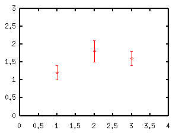
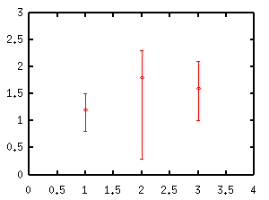
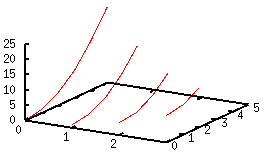
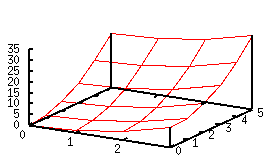
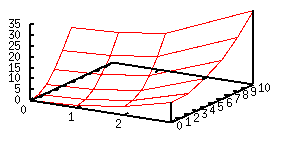
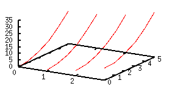
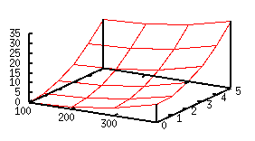

- not so Frequently Asked Questions -
update 2004/9/15
|
|
- not so Frequently Asked Questions - update 2004/9/15
|
|
not so FAQ |
Plotting Numerical Data in a Data File (No.1)Probably most of the gnuplot lovers in a scientific field use this program to draw a graph of some calculated results or experimental data. They see their results on their monitor, make some corrections, comparison of the calculated result with the experimental data, and so on. If it seems fine, the figure is saved in a postscript format and send it to a printer, otherwise an EPS file is included in a TeX document... What is the format which gnuplot can recognize ?2-dimensional dataIn a data file, the data columns are separated by a white-space or tab. If a line begins with "#", this line is ignored. Generally gnuplot can read any data format if one specifies the format. See gnuplot help "using". # X Y 1.0 1.2 2.0 1.8 3.0 1.6 For example, if you have two-dimensional data, one line contains a pair of X and Y values, like the example above. If X or Y values have uncertainties, you need an extra column to give the errors. The order of columns is not important because you can specify which column is used for X or Y data. If the first column is the X data, and the second is the Y data, use using option as: gnuplot> plot "test.dat" using 1:2 If using is omitted, the first column is used for the X data, and the second is for the Y data automatically. There are two ways to make an error-bar for the Y value. The first one is that the Y value has uncertainties of plus/minus Z. The second one is that the Y value has a range [Z1,Z2]. In this case the lengths of the error bars below and above Y value are different. The former needs three columns, and the latter needs four columns. # X Y Z 1.0 1.2 0.2 2.0 1.8 0.3 3.0 1.6 0.2 
# X Y Z1 Z2 1.0 1.2 0.8 1.5 2.0 1.8 0.3 2.3 3.0 1.6 1.0 2.1 
To plot those data, gnuplot> plot "test.dat" using 1:2:3 with yerrorbars gnuplot> plot "test.dat" using 1:2:3:4 with yerrorbars one needs the using option. The number of data column required for data plotting depend on a kind of figure, which is summarized below.
3-dimensional dataThree dimensional data are specified by (X,Y,Z). In the default, it represents a point in a 3-dimensional space. When one uses with lines option to draw lines, gnuplot shows 3-dim. lines or surfaces depending on a data format. The following example contains 4 blocks data, which are separated by one blank line. The number of (X,Y) pairs are different for the each data block. In such a case, gnuplot does not draw a surface but 3-dim. lines. # X Y Z 0 0 0 0 1 1 0 2 4 0 3 9 0 4 16 0 5 25 1 0 1 1 1 2 1 2 5 1 3 10 1 4 17 2 0 4 2 1 5 2 2 8 2 3 13 3 0 9 3 1 10 3 2 13 gnuplot> splot "test3d.dat" using 1:2:3 with lines 
Now, if the number of (X,Y) pairs is the same: # X Y Z 0 0 0 0 1 1 0 2 4 0 3 9 0 4 16 0 5 25 1 0 1 1 1 2 1 2 5 1 3 10 1 4 17 1 5 26 2 0 4 2 1 5 2 2 8 2 3 13 2 4 20 2 5 29 3 0 9 3 1 10 3 2 13 3 3 18 3 4 25 3 5 34 
The surface grid appears. Although the Y values (second column) in the each block of this example are the same, gnuplot also draws the surface grid even if the Y values are different (but the number of data points are the same.) Such data are treated as the grid data. When your data are the grid data, gnuplot can draw a contour map, or hidden line processing can be done. The next is a simple test --- the Y values in the last block are doubled (changed from Y=5 to Y=10). 
If you want to remove the surface-grid but your blocks contain the same number of data point, separate the each block by two blank lines. # X Y Z 0 0 0 0 1 1 0 2 4 0 3 9 0 4 16 0 5 25 1 0 1 1 1 2 1 2 5 1 3 10 1 4 17 1 5 26 2 0 4 2 1 5 2 2 8 2 3 13 2 4 20 2 5 29 3 0 9 3 1 10 3 2 13 3 3 18 3 4 25 3 5 34 
MatrixThe matrix data format is an alternative way to give 3-dim. data. When X and Y values (XY grid) are fixed, the matrix format is more convenient. In this format, raw is the direction of X, and column is Y.
0 1 4 9
1 2 5 10
4 5 8 13
9 10 13 18
16 17 20 25
25 26 29 34
To plot this data, use matrix . When the data are represented by the matrix format, the X and Y coordinates are the index of row and column. In this case the X range is [0:3] and the Y range is [0:5]. If you want to change those number, use the set {x|y}tics command. The next shows how to change the X range from [0:2] to [100:300].
gnuplot> set xtics ("100" 0, "200" 1, "300" 2)
gnuplot> splot "test3d.dat" matrix with lines

 |